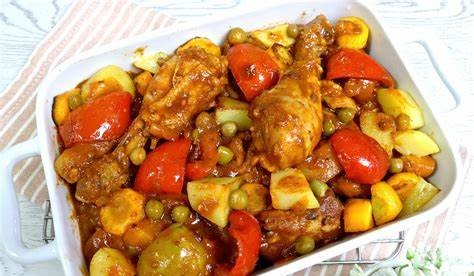

Chicken Afritada Recipe
What is Chicken Afritada?
Chicken Afritada is a popular Filipino dish that is typically made with chicken, tomato sauce, potatoes, carrots, and
bell peppers.
It is a savory and hearty stew that is perfect for family meals and special occasions. The dish is
prepared by sautéing garlic and onion in oil, then adding chicken and cooking until browned.
Tomato sauce, water, and
vegetables are then added, and the mixture is simmered until the chicken is cooked through and the sauce has thickened.
The dish is typically served with steamed rice.
Ingredients
1 ½ lbs. Chicken cut into serving pieces
2 piece potato cubed
1 piece carrot sliced
8 oz. tomato sauce
3 pieces hotdog sliced
½ cup green peas
3 pieces bay leaves
1 piece red onion chopped
2 teaspoons garlic minced
3 cups chicken broth
½ teaspoon sugar
3 tablespoons cooking oil
Salt and ground black pepper to taste
Instructions / How to Cook
1. Heat the oil in a cooking pot. Saute onion and garlic until the onion softens.
2. Add chicken. Cook for 30 seconds. Turn it over and cook the other side for another 30 seconds.
3. Pour tomato sauce and chicken broth. Cover. Let boil.
4. Add dried bay leaves. Cover the cooking pot. Continue to cook in medium heat for 30 minutes.
5. Add hotdogs and carrot. Cook for 3 minutes.
6. Add potato. Cover the pot and cook for 8 minutes.
7. Add green peas. Cook for 2 minutes.
8. Season with salt and ground black pepper